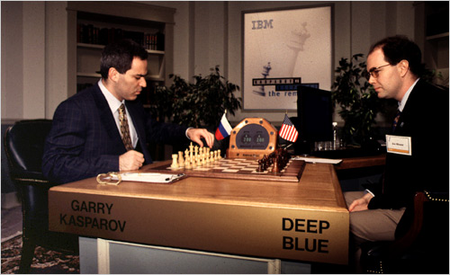

Çok uzun zamandýr robotlar hem gerçek hayatta (sanayi tesislerinde, üniversitelerin araþtýrma laboratuarlarýnda, mutfaklarda) hem de hayal dünyamýzda (sinema ve edebiyat yapýtlarýnda) yer alýyorlar. Bir satranç ustasý DEEP BLUE, Sony'nin sevimli robotu QRIO en güncel örnekleri.
Edebiyat dünyasýnda Asimov'un "Ben Robot"'u, sinema dünyasýnda Yýldýz Savaþlarý'nýn R2D2 ve C3PO'su en eski ve en popüler örnekler. Elbette örnekler arttýrýlabilir. Ama bir gerçek var ki günümüzde sinema yapýtlarýnýn hemen hepsinde robotlar yer alýyor ve her geçen gün yeni ve daha geliþmiþ bir robot anlatýlýyor televizyonlarda, internette ve dergilerde.
Þekil 1. R2D2 ve C3PO
Hayal ürünü robotlar hemen, hemen her þeyi yapabilirken gerçek robotlar onlara göre henüz emekleme aþamasýndalar. Peki gerçek robotlar günün birinde hayal mahsulü olanlara yetiþebilecekler mi? Ya da baþka bir deyiþle, robotlar nereye gidiyorlar?
Geliþim süreci:
George Basalla "Teknolojinin Evrimi" adlý yapýtýnda insan yapýsý olan her ürünün bir geliþme süreci olduðunu, her ürünün bir önceli olduðunu öne sürer. Ýnsanoðlu beklentilerini karþýlamak üzere bir çok ürün yapar ama ihtiyacýna en uygun olaný seçer. Böylece sadece insanýn iþine en çok yarayan ürün geliþir, diðerleri de kaybolur. Teknolojinin Evrimi adlý eserde silahlar ve tarým ürünleri ile ilgili çok ikna edici örnekler anlatýlmaktadýr.
Robotlar konusunda durum böyle mi acaba? Endüstriyel ve oyuncak robotlarýn doðrudan insan beklentileri doðrultusunda geliþtikleri kuþku götürmez. Ancak ticari ve endüstriyel olmayan robotlar konusunda insanoðlunun ne gibi bir beklenti içinde olduðu çok açýk deðil. Neden satranç oynayan ya da insan gibi yürüyebilen robotlar yapýyoruz?
Bu sorunun cevabý çok açýk deðil. Açýk olan bir þey var: robotlar sürekli geliþiyor:
Þekil 2. Honda tarafýndan yapýlan Asimo'nun geliþim süreci
Peki bu geliþme nereye kadar devam edecek? Robotlarý geliþmeye iten, deðiþtiren dinamik ne?
Elbette insanoðlunun ta kendisi. Bir robotun herhangi bir konuda yapabileceði bir faaliyetin en mükemmel seviyesi insanýn bulunduðu seviyedir. Bir sanayi robotu 1000ton kaldýrabilir. Bunu hiç bir insanoðlu yapamaz. Ama ekipmanýn kendi aðrýlýðý, iþi yaparken sarf ettiði birim aðýrlýðýna karþý birim enerji miktarý, enerji kaynaðý, verimi, bakýmý, onarýmý, vs dikkate alýnýrsa insandan yapýsal olarak hiç de üstün olmadýðý görülecektir.
Yani bir robotun geliþme hedefi, gelebileceði noktanýn üst sýnýrý insan olabilir, en azýndan ona yetiþinceye kadar. Nitekim bilimkurgu yapýtlarýnýn hemen hepsinde robotlar insan faaliyetlerini insandan daha iyi yapacak ve insana galip gelecek þekilde kurgulanýrlar.
Þimdiye kadar bir birinden baðýmsýz yapýlan robot deneyimleri bir araya getirilerek robotlarýn geliþim süreçleri konusunda bir þema çýkartýlabilir mi? Elbette baþlangýçta sadece kaba bir þema çýkartýlabilir. Her þeyden önce bu sürecin tam olarak ne kadar süreceði, hangi hýzda devam edeceði ve hangi alanlarda yoðunlaþacaðý belli deðil.
Dinamikler:
Ýnsanoðlunun geldiði nokta diye tanýmladýðýmýz noktaya insanoðlunun kendisinin gelmesi de hiç kolay olmamýþtýr. Ýlerlemenin ve geliþmenin en etkili dinamiði mücadele ve rekabettir. Örnek olarak olimpiyatlarý düþünebiliriz ki her dört senede bir yapýlan olimpiyatlarda, bir önceki olimpiyatýn kýrýlamayan rekoru hemen, hemen yoktur. Bu yüzden robotlarýn geliþmeleri için en uygun alaný rekabetin ve mücadelenin en yoðun olduðu insani faaliyet alaný olan spordur.
Þekil 3. Sporda Fiziksel - Zihinsel Zorluk ve Teknolojik Yetkinlik Matrisleri
Teknolojik geliþmiþlik düzeyinin tasarým ve imalat sürecindeki yeri yadsýnamaz. Robota güç veren eriþim düzeneklerinin ya da motorlarýn ne kadar küçülebileceði, hangi organik yakýtlarýn ne þekilde kullanýlabileceði, robotun genel yapýsýnýn ne kadar esnek ve hýzlý olabileceði tamamen teknolojini düzeyine baðlý olup ve robotlardaki geliþmeler doðrudan teknolojik seviyeyi ilerletebilecek kadar baskýn deðildir. En azýndan bugün.
Bu yüzden mevcut teknolojik seviyenin olanak tanýdýðý alanlarda robotlar insan karþýsýna çýkmaya cesaret edebiliyor. Bunun en bilindik örneði IBM'in DEEP BLUE adlý bilgisayarýdýr. DEEP BLUE insanoðlunun satrançta gelebildiði en üst seviyeye Kasporov'tan bir kaç maç almayý baþararak gelmiþtir. DEEP BLUE toplamda yenilmesine raðmen yarýþmaya daha fazla devam etmemiþtir çünkü gelebileceði en üst noktaya gelmiþtir. Kasparov'dan sonra nasýl bir Büyük Usta geleceði ve Deep Blue'yu yenip yenemeyeceði de belli deðildir. Deep Blue ile ilgili kötü olan þey, neredeyse ENIAC kadar büyük ve hantal olmasýdýr. Günün birinde bir insan beyni kadar küçülebilecek, onun kadar hýzlý olabilecek midir? Bunu bilmiyoruz. Ama bundan sonra gidebileceði yollardan birisi bu. Küçülmek, daha az enerji tüketmek, daha hýzlý olmak, belki ayný zamanda baþka oyunlarda oynamak?
 Þekil 4. Kasparov, DEEP BLUE karþýsýnda...
Peki þimdi sýrada hangi spor dalý, hangi dünya þampiyonu var? Bundan sonra yenilecek þampiyon muhtemelen bir bilardo þampiyonu olacak. Neden mi? Çünkü teknolojinin gerçekleþmesine olanak tanýdýðý ve satranca en yakýn spor bilardo. Satranç oynarken milyonlarca alternatif düþünen bir makine için bilardodaki alternatifleri hesaplamak hiç de zor olmasa gerek. Zor olan, ya da denenmemiþ olan, dijital oyunun gerçek masa da kurgulanmasý. Top gerçekten bilgisayarýn gitmesini istediði yere gidebilecek mi? Bu artýk mekaniði de içine alan bir konu. Ama baþlangýçta büyük, yavaþ, hantal bir makine elbette yapýlabilir. Bu teknik olarak mümkün. Bilardo buna en uygun spor, hem çok hýzlý deðil hem diðer spor dallarý gibi atiklik, mukavemet, gerektirmiyor. Önümüzdeki yýllar bir þampiyon ve robot arasýnda bir bilardo maçý olup olmayacaðýný, hipotezin doðru olup olmadýðýný gösterecek.
Robotlar insanoðlunun karþýsýna çýkmadan önce hangi aþamalardan geçiyorlar? Robot'larýn geliþim süreçleri 5 temel aþamaya ayrýlabilir. Bunlarý durgun bir suda oluþan dalgalara benzetebiliriz.
I. Aþamada en temel insan davranýþlarýnýn kopya ediyorlar.
Sony'nin yürüyen Robot'u QRIO'su bu aþamaya örnek verilebilir;
Þekil 5. QRIO
2. Aþamada birbirlerinin basit kopyalarý ile mücadele ediyorlar
Georgia Tech üniversitesinde yapýlan robot köpekler arasý maç bu aþamaya örnek olarak verilebilir.
Þekil 5. Robot köpekler arasý maç
3. aþamada Ýnsanla rekabet ediyorlar.
Buna örnek olarak da DEEP BLUE verilebilir, bu rekabetin geldiði en üst noktadýr.
Daha basit bir seviye Penn State Üniversitesinde araþtýrma amacýyla yapýlan Pin-Pon karþýlaþmasý verilebilir. Elbette robot sadece ilk topa karþýlýk verebilmiþtir.
Þekil 7. Robot ve Ýnsan Pin-Pon maçý denemesi.
Þekil 8. Mekatronik bölümü öðrencilerinin bitirme projesi olarak yaptýðý,
robotik pin-pon oyuncusu.
(The University of Adelaide,
Australia)
4. Aþama Farklý özelliklerin birleþmesi.
Bu aþamaya Satranç ve Pinpon oynayabilen bir robot örnek gösterilebilir. Ancak bu aþamada bilinen bir örnek yoktur.
5. Aþama Baðýmsýzlýk aþamasý
Bu aþama uzak gelecekle ilgili bir öngörü. Bir robotun 4 aþamayý da geçip insana ait her faaliyette insanla rekabet edebilmeye baþladýðý noktadýr.
Þekil 10. Robotlarýn Geliþme Dinamikleri
Sonuç:
Bu yazý robotlarýn tesadüfen ilerlemediklerini, bazý dinamikler çerçevesinde geliþtiklerini anlatmakta ve bu konuda genel bir çerçeve çizmektedir. Mevcut teknolojik seviye, insan yapýsý nesnelerin tarihsel geliþimi, bu zaman kadar yapýlmýþ olan robotlar ve insanoðlunun edebiyat ve sinema gibi yapýtlarýndaki kurgularý gelecekte yapýlacak robotlarla ilgili ipuçlarý taþýmaktadýr.